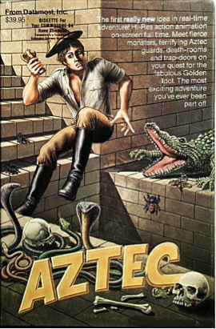

An Apple ][ Emulator in JavaScript written by Will Scullin
Aztec
Aztec combines arcade-style game skills with role-playing fantasy game quests and puzzles. The goal is to find the legendary golden idol, which is no easy feat as it is fraught with peril. The players movements are controlled with a keyboard. You walk through rooms (ancient of course), run, jump, place objects, and shoot or hack your way through obstacles.
Quick Start
The Game tells you how to play
in issue jan the high score was 704,306

Impact
According to Softline’s January 1983 issue, Aztec has a strong resemblance to another earlier game, Raiders of the Lost Ark, however it is only “sort of coincidental”. Aztec was among rated games in Computer Gaming World’s 1983 game ratings for games from 1982 - 1983. It had a below average user rating of 5.79. Aztec was ranked 15 in Softalk’s January 1983 issue’s top thirty list.
Production History
Aztec was created in 1982. It was created by Paul Stephenson. Aztec was published by Datamost, a potential victim of the “Shakeout”. During the Shakeout in the mid-1980s, games failed because of the failure of companies that made the platforms for the games. Microcomputers and consoles like the Commodore VIC and Atari stopped being made and game makers were left with unsellable games and losses that could not be recouped from the manufacturing of games created for the defunct consoles.